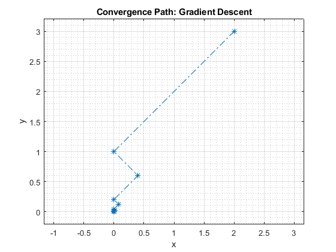
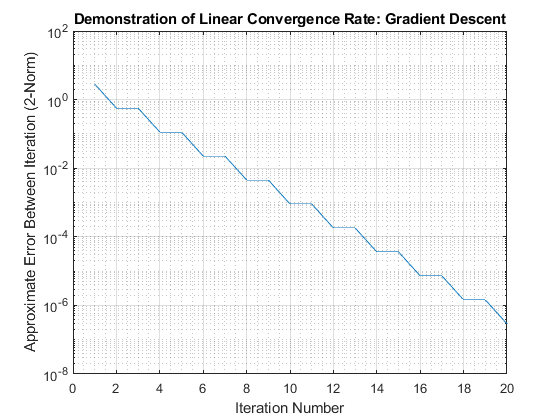

clc; clear; close all; format shortE
alpha_tol = 1e-4;
square_norm_err_tol = 1e-6;
f = @(x) 4*x(1)^2 -4*x(1)*x(2) + 2*x(2)^2 + 8;
f_grad = @(x) [8*x(1) - 4*x(2), -4*x(1) + 4*x(2)]';
f_hess = @(x) [8 -4;-4 4];
d_phi = @(x, alpha) (-80 + 832*alpha)*x(1)^2 + (96 - 1024*alpha)*x(1)*x(2) + (-32 + 320*alpha)*x(2)^2;
dd_phi = @(x) 832*x(1)^2 - 1024*x(1)*x(2) + 320*x(2)^2;
alpha_k_plus_one = @(x, alpha) alpha - d_phi(x, alpha)/dd_phi(x);
prev_guess = [2 3]';
prev_alpha = 0;
iter = 0;
max_iter = 30;
iter_num = 1:max_iter;
x_k = zeros(length(iter_num),1);
y_k = zeros(length(iter_num),1);
a_k = zeros(length(iter_num),1);
x_k_plus_one = zeros(length(iter_num),1);
y_k_plus_one = zeros(length(iter_num),1);
err_data = zeros(length(iter_num),1);
while true
iter = iter + 1;
while true
next_alpha = alpha_k_plus_one(prev_guess, prev_alpha);
if abs(next_alpha - prev_alpha) < alpha_tol
break;
end
prev_alpha = next_alpha;
end
next_guess = prev_guess - next_alpha*f_grad(prev_guess);
err = my2Norm(next_guess - prev_guess);
x_k(iter) = prev_guess(1);
y_k(iter) = prev_guess(2);
a_k(iter) = next_alpha;
x_k_plus_one(iter) = next_guess(1);
y_k_plus_one(iter) = next_guess(2);
err_data(iter) = err;
if err < square_norm_err_tol
iter_table = table(iter_num(1:iter)', x_k(1:iter), y_k(1:iter), a_k(1:iter), x_k_plus_one(1:iter), y_k_plus_one(1:iter),err_data(1:iter), ...
VariableNames = ["Iter.", "x_k","y_k","a_k", "x_k+1", "y_k+1","error"]);
disp(iter_table);
break;
elseif iter >= max_iter
error("Convergence Failure!");
end
prev_guess = next_guess;
end
fprintf("The numerical solution (x,y) to the local minimization algorithm is:");
next_guess
fprintf("The corresponding minimized value of the objective function f(x,y) is:");
f(next_guess)
figure;
plot(iter_table.x_k, iter_table.y_k, "-.*");
xlabel("x");
ylabel("y");
grid on; grid minor; axis padded; axis equal
title("Convergence Path: Gradient Descent");
figure;
semilogy(iter_table.(1), iter_table.error);
xlabel("Iteration Number");
ylabel("Approximate Error Between Iteration (2-Norm)");
title("Demonstration of Linear Convergence Rate: Gradient Descent");
grid on; grid minor;
Iter. x_k y_k a_k x_k+1 y_k+1 error
__________ ___________ __________ __________ ___________ __________ __________
1.0000e+00 2.0000e+00 3.0000e+00 5.0000e-01 0.0000e+00 1.0000e+00 2.8284e+00
2.0000e+00 0.0000e+00 1.0000e+00 1.0000e-01 4.0000e-01 6.0000e-01 5.6569e-01
3.0000e+00 4.0000e-01 6.0000e-01 5.0000e-01 -2.6090e-15 2.0000e-01 5.6569e-01
4.0000e+00 -2.6090e-15 2.0000e-01 1.0000e-01 8.0000e-02 1.2000e-01 1.1314e-01
5.0000e+00 8.0000e-02 1.2000e-01 5.0000e-01 2.9143e-16 4.0000e-02 1.1314e-01
6.0000e+00 2.9143e-16 4.0000e-02 1.0000e-01 1.6000e-02 2.4000e-02 2.2627e-02
7.0000e+00 1.6000e-02 2.4000e-02 5.0000e-01 2.1858e-16 8.0000e-03 2.2627e-02
8.0000e+00 2.1858e-16 8.0000e-03 1.0000e-01 3.2000e-03 4.8000e-03 4.5255e-03
9.0000e+00 3.2000e-03 4.8000e-03 5.0000e-01 6.5919e-17 1.6000e-03 4.5255e-03
1.0000e+01 6.5919e-17 1.6000e-03 1.0000e-01 6.4000e-04 9.6000e-04 9.0510e-04
1.1000e+01 6.4000e-04 9.6000e-04 5.0000e-01 1.6371e-17 3.2000e-04 9.0510e-04
1.2000e+01 1.6371e-17 3.2000e-04 1.0000e-01 1.2800e-04 1.9200e-04 1.8102e-04
1.3000e+01 1.2800e-04 1.9200e-04 5.0000e-01 5.1771e-18 6.4000e-05 1.8102e-04
1.4000e+01 5.1771e-18 6.4000e-05 1.0000e-01 2.5600e-05 3.8400e-05 3.6204e-05
1.5000e+01 2.5600e-05 3.8400e-05 5.0000e-01 9.8256e-19 1.2800e-05 3.6204e-05
1.6000e+01 9.8256e-19 1.2800e-05 1.0000e-01 5.1200e-06 7.6800e-06 7.2408e-06
1.7000e+01 5.1200e-06 7.6800e-06 5.0000e-01 3.1171e-19 2.5600e-06 7.2408e-06
1.8000e+01 3.1171e-19 2.5600e-06 1.0000e-01 1.0240e-06 1.5360e-06 1.4482e-06
1.9000e+01 1.0240e-06 1.5360e-06 5.0000e-01 5.6328e-20 5.1200e-07 1.4482e-06
2.0000e+01 5.6328e-20 5.1200e-07 1.0000e-01 2.0480e-07 3.0720e-07 2.8963e-07
The numerical solution (x,y) to the local minimization algorithm is:
next_guess =
2.0480e-07
3.0720e-07
The corresponding minimized value of the objective function f(x,y) is:
ans =
8.0000e+00
 
subroutine_result = myGradientDescent([2 3]',f_grad,f_hess,square_norm_err_tol)
subroutine_result =
2.0480e-07
3.0720e-07